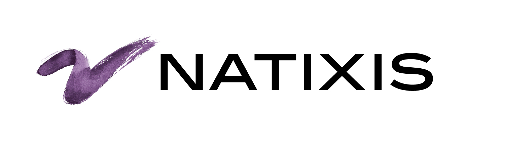

Curriculum vitae
Charles Le Chevert
Après 3 ans d'expérience dans l'industrie de la finance completée par 1 an d'enseigment de mathématiques dispensés à des élèves de secondaires, je me destine à devenir développeur fullstack JS.
LANGUAGE

Mon parcours pro
2022

Formation développeur
fullstack JS
Formation généraliste au métier de développeur web. Spécialisation en back-end. Projet de fin de formation:
2021/2

Enseignant en mathématiques
Classe de secondaire : 6ème première et terminale
Obtention du CAPES (161 points - barre d'admissibilité 101)
2019/21
Auditeur financier
Contrôle de l'information financière et de process
Clients : filliales UK de sociétés du CAC40
2019
Stagiaire - Département coverage
Consolidation des données des différents départments de la banque d'investissement à destination du top management
Création de reporting KPIs automatisés
2016/8
Alternant - Départment CAL&F financement énergies renouvelables
Consolidation des données des différents départments de la banque d'investissement à destination du top management
Création de reporting KPIs automatisés